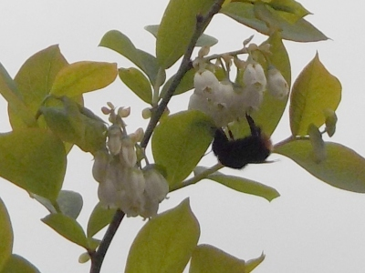
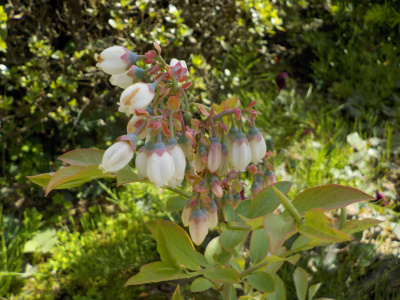
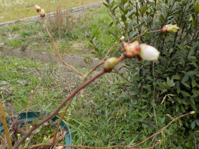
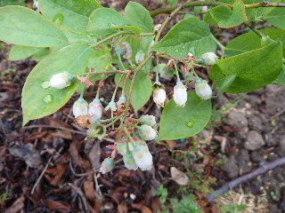
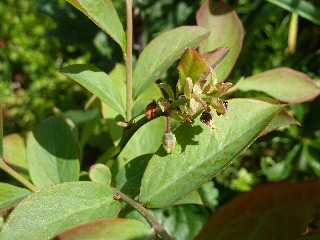

ブルーベリーにクマンバチが寄ってました。
更新日 : 2024/04/20

近付くと危険なので離れて写真を撮りました。ピントが合ってないですね。
沢山写真を撮ればよかった。
更新日 : 2024/04/20

近付くと危険なので離れて写真を撮りました。ピントが合ってないですね。
沢山写真を撮ればよかった。
更新日 : 2023/04/22

細い枝に大量の花が付いています。
沢山食べたいです。
更新日 : 2023/03/12

何故かもう開花していました。
速い。
更新日 : 2015/05/03

花がかたまって咲いてると華やかでいいですね。
欲をいうと、もっと木が大きくなって、もっと沢山花が欲しいです。
更新日 : 2013/04/28
同じ時期に挿し木したブルーベリーが5本あったんですが、1本だけ花がありました。

来年は全部咲いて欲しいな。そんでもっていっぱい実をつけて欲しいな。
まめに手をかけて、大事に育てましょ。
アセビの花によく似ていますよね。